Для хранения данных на формах, виджетах, задачах или стартовых событиях бизнес-процесса в системе используются наборы полей. Выбор типа поля зависит от информации, которую необходимо отображать. Например, для комментария создаётся поле типа Строка, для суммы договора — Деньги и т. д.
Подробнее о добавлении полей на формы читайте в статье «Вкладка „Контекст“». Ниже подробно описаны типы данных, которые поддерживаются в системе. О том, как работать с различными типами данных в скриптах, читайте в справке ELMA365 TS SDK.
Строка
Применяется для внесения текстовой информации.
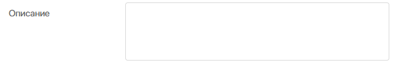
Возможны варианты отображения в виде строки или текста. Опция Markdown позволяет форматировать вводимую информацию с помощью разметки. Подробнее об этом читайте в статье «Markdown».
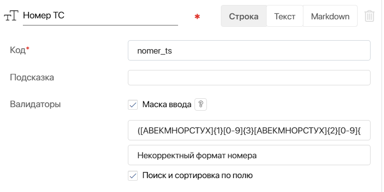
Кроме общих настроек, у данного типа есть дополнительная настройка:
- Валидаторы — позволяет задать шаблон, с помощью которого будет проверяться корректность введённой информации;
- Маска ввода — в качестве маски используются регулярные выражения. В маске доступны только выражения без флагов. Подробнее про написание регулярных выражений можно прочитать в документации MDN Web Docs;
- Сообщение при несоответствии маске ввода — текст сообщения, который будет отображаться при вводе строки, не отвечающей требованиям введённого регулярного выражения. Подробнее об этом читайте в статье «Создание масок строковых полей с помощью регулярных выражений».
Число
Данное поле используется для ввода целых или дробных чисел. Указывать другие символы нельзя.
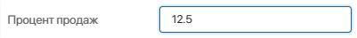
При добавлении свойства выберите его тип:
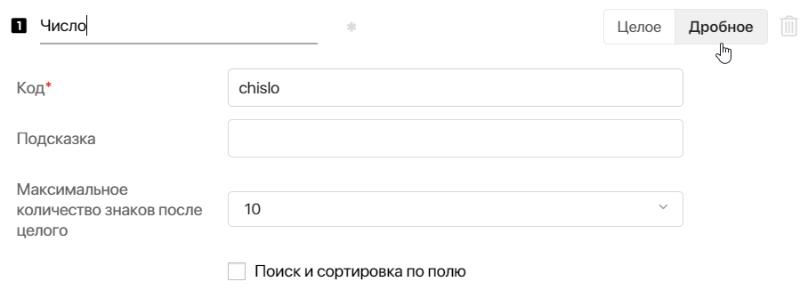
- Целое или Дробное — определяет формат числа для ввода.
- Максимальное количество знаков после целого — настройка доступна только для дробного числа и позволяет указать, сколько знаков после разделителя будет отображаться в поле. Значение выбирается из списка от двух до десяти.
Например, поле на форме заполняется по формуле, и для него указано ограничение 2 знака после целого. Если в результате вычислений получилось число 3,14159, в поле отобразится 3,14.
При ручном вводе числа на форме создания или редактирования пользователь также сможет указать только допустимое количество знаков.
Вычисление дробного числа в системе может быть неточным по причине особенностей исполнения языка JavaScript в браузере пользователя и в NodeJS на сервере. Подробнее об этом читайте в статье «Неточные вычисления в JavaScript».
Выбор «да/нет»
Добавляет на форму флажок или переключатель и позволяет пользователям выбрать один из возможных вариантов.
По умолчанию доступны значения Да и Нет, но вы можете переименовать их.
Чтобы одно из значений отображалось на форме по умолчанию, отметьте его флажком. При необходимости вы сможете изменить значение поля на форме.
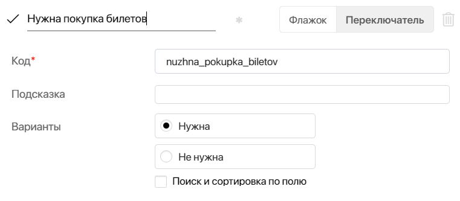
Варианты отображения:
- Флажок
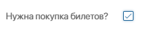
- Переключатель
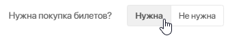
Вы можете изменить вариант отображения, указанный при создании поля. Для этого перейдите в Настройки формы приложения, выберите поле и отметьте нужную опцию.
Дата/время
Данный тип используется для добавления на форму выбора даты и/или времени.
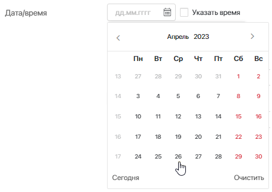
Настроить формат отображения можно при создании свойства или контекстной переменной.
1. Дата/Время — на форме нужно будет указать дату и время.
2. Дата — на форме нужно указать только дату. При этом значению автоматически присвоится время 00:00.
3. Время — на форме нужно указать только время.
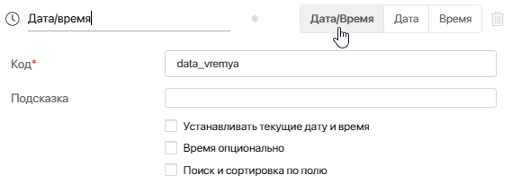
Вы можете также включить опции:
- Устанавливать текущую дату и время — в поле будет указана текущая дата и время. При выборе данной опции для переменной бизнес-процесса подставится дата запуска этого процесса;
- Время опционально — при необходимости, помимо даты, пользователь сможет указать на форме время. Опция доступна для типа Дата/Время. Дополнительно можно определить, какое время будет установлено по умолчанию:
- Начало дня — 00:00;
- Конец дня — 23:59.
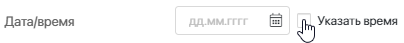
На форме в поле Время будет записан один из двух вариантов.
Категория
Данный тип помогает настроить поле для выбора одного или нескольких вариантов из списка. Доступные варианты можно добавить при настройке и редактировании формы или при создании контекстной переменой.
Определите количество выбираемых вариантов, включив опцию Одиночный или Множественный.
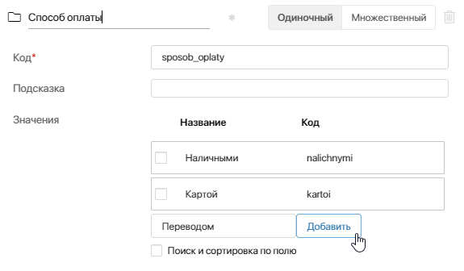
Для выбора варианта в настроенном на форме поле откройте выпадающий список.
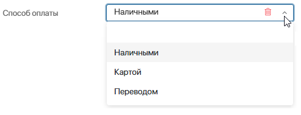
Сбросить значение можно, нажав значок или выбрав пустую строку.
Для работы с полем Категория можно использовать скрипты, что позволяет автоматически заполнять список вариантов выбора. Например, можно записать в него статусы приложения. Это делается путем настройки динамического списка. Для этого используется переменная, собирающая статусы и их значения, передаваемые в поле типа Категория в виде массива. Такая настройка также обеспечивает автоматическое обновление списка при изменениях в статусах приложений, устраняя необходимость ручной корректировки. Дополнительная информация по настройке такого поля доступна в справке ELMA365 TS SDK.
Деньги
Поле для ввода чисел c указанием кода валюты.
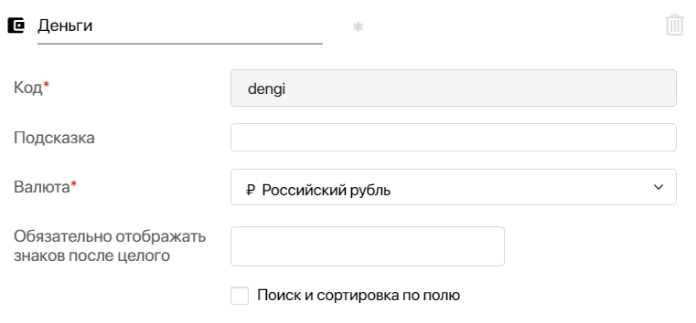
- Валюта — выберите тип валюты в выпадающем списке справа от названия поля. В дальнейшем, при редактировании поля, вы сможете изменить валюту на другую. Однако в таком случае значения, указанные пользователями ранее, не изменятся до тех пор, пока кто-то не откроет поле и не сохранит введённые данные заново. Наименования и коды валют соответствуют стандарту ISO 4217;
- Обязательно отображать__знаков после целого — укажите количество цифр, выводимых после запятой на форме просмотра элемента приложения. Функция доступна даже для целых чисел. Например, введите в поле цифру 2, и данные на форме просмотра будут отображаться следующим образом: 100,00₽.
Максимально возможное значение зависит от типа валюты. Если оно превышено, отобразится значок . Наведите на него курсор, чтобы увидеть допустимое количество знаков.
Учетная запись
Поле используется для хранения учётных записей мессенджеров. Приложение, в контексте которого есть поле этого типа, можно связывать с сессиями в линиях в разделе Линии.
Вы можете указать Тип учетной записи: Telegram, WhatsApp, Viber и т. д. Также доступен тип Другие, который используется для хранения записи, тип которой не указан в списке, например, электронной почты.
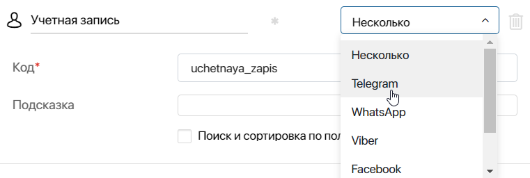
Если вы выбрали опцию Несколько, пользователь сможет выбрать тип и добавить несколько учётных записей при заполнении поля на форме.
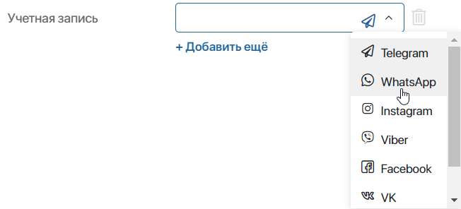
Номер телефона
Поле используется для ввода номера телефона.
Вы можете указать Тип номера телефона: главный, домашний, рабочий и т. д.
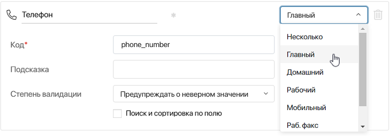
Если вы выбрали опцию Несколько, пользователь сможет указать тип номера при заполнении поля на форме.
Опция Степень валидации позволяет задать строгость проверки введённого на форме номера на соответствие формату номеров в выбранной стране:
- Предупреждать о неверном значении — если пользователь введёт номер в неверном формате, справа от поля появится значок . При этом элемент приложения с таким значением в поле можно сохранить;
- Запрещать неверные значения — при неверном формате номера под полем появится предупреждение. Чтобы сохранить элемент приложения, пользователю нужно скорректировать номер телефона.
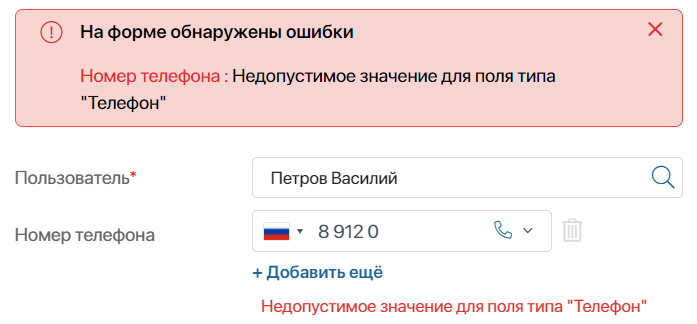
При заполнении поля на форме пользователь может указать добавочный номер абонента через разделитель:
- +79991234567 x1234
- +79991234567 ext 1234
- +79991234567 доб 1234
- +79991234567;1234
На форме просмотра добавочный номер будет отображаться следующим образом: +79991234567 x1234.
Электронная почта
Поле используется для ввода электронной почты.
Вы можете указать Тип электронной почты: главная, домашняя, рабочая.
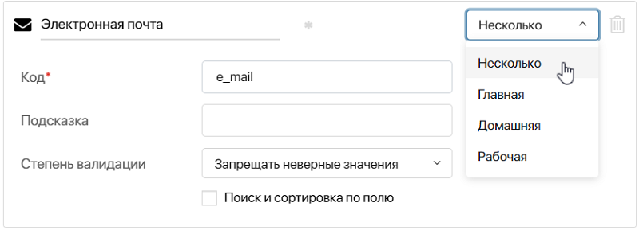
Если вы выбрали опцию Несколько, при заполнении поля пользователь может сам определить тип.
Опция Степень валидации позволяет задать строгость проверки формата электронной почты при заполнении поля на форме:
- Предупреждать о неверном значении — если пользователь введёт электронную почту в неверном формате, справа от поля появится значок . При этом элемент приложения с таким адресом можно сохранить;
- Запрещать неверные значения — при неверном формате адреса электронной почты под полем появится предупреждение. Чтобы сохранить элемент приложения, пользователю нужно скорректировать адрес почты.

При заполнении поля на форме пользователи могут указывать доменное имя в адресе английскими и русскими буквами: petrov@example.com, petrov@домен.ру.
Когда поле заполнено, на форме просмотра доступны дополнительные опции: пользователь может быстро перейти к добавлению и отправке письма на указанный электронный адрес, а также скопировать почту в буфер обмена. Для этого нужно нажать на значок рядом с заполненным полем и выбрать опцию.
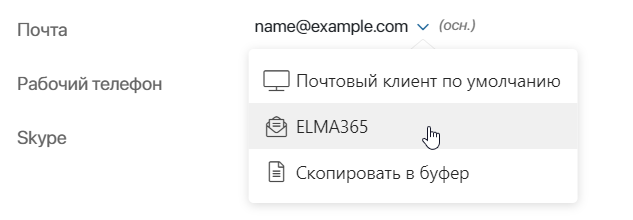
- Почтовый клиент по умолчанию — выберите опцию, чтобы перейти в окно добавления письма в email-приложении, установленном на вашем компьютере. Адрес получателя будет заполнен автоматически;
- ELMA365 — если вы подключили электронный адрес к встроенному почтовому клиенту ELMA365 в разделе Почта, вы сможете создать и отправить новое письмо в интерфейсе системы. При нажатии откроется окно Написать сообщение. Поле Кому будет заполнено автоматически;
- Скопировать в буфер — сохраните электронный адрес в буфере обмена.
Изображение
Изображение позволяет прикрепить файлы следующих форматов: .jpg, .tiff, .tif, .avif, .webp, .gif, .bmp, .png. При настройке поля вы можете определить количество прикрепляемых изображений: Одно или Несколько.
Если установлен флажок Выбирать фрагмент изображения при загрузке, вы сможете указать определённую область изображения для отображения.
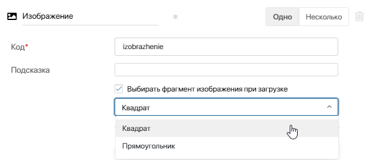
Вид отображения на форме:
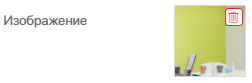
Файлы
Поле Файлы позволяет прикрепить файлы любого формата, например, счета, документы, видео и т. д.
Вы можете настроить количество прикрепляемых файлов: Один или Несколько.
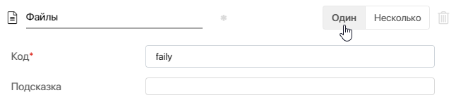
Обратите внимание, если изменить тип с Несколько на Один, при редактировании существующих элементов можно оставить в поле только один файл. Если файлов больше, после сохранения элемента лишние автоматически удалятся.
Чтобы прикрепить файл, перетащите его с компьютера или нажмите на значок три точки и затем добавьте из раздела Файлы или буфера обмена.

Обратите внимание, что в браузере Mozilla Firefox не поддерживается вставка нескольких файлов из буфера обмена. В этом случае добавится только первый файл.
Добавленный в поле файл будет отображаться на форме следующим образом:
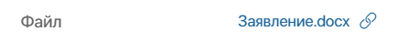
Вы можете скопировать ссылку на файл, чтобы поделиться им с коллегой. Для этого нажмите значок . Другой сотрудник сможет скачать файл по ссылке, если у него есть соответствующие права доступа.
Вы также можете открыть файл в режиме просмотра, нажав на него в карточке элемента или задачи. На странице можно:
- загрузить документ на компьютер, нажав значок
 ;
; - вызвать меню с дополнительными опциями, нажав значок :
- Создать ярлык — разместите ссылку на файл в выбранной папке раздела Файлы. Это помогает систематизировать информацию и быстро находить нужные документы. Выберите опцию, затем перейдите в папку, в которой нужно создать ссылку на данный файл, и нажмите + Вставить ярлык или клавиши Ctrl+V;
- Сравнить с файлом — загрузите файл с компьютера, чтобы сравнить с ним документ из карточки элемента или задачи. Опция доступна для файлов форматов .doc и .docx. При этом сравнивать можно файлы только одинаковых форматов;
- Сравнить с версией — действие доступно, если в системе самостоятельно включена и настроена версионность для документов из свойств типа Файлы. Опция отобразится для файлов форматов .doc и .docx на карточке элемента или задачи, когда вы добавите несколько версий. При этом сравнивать можно файлы только одинаковых форматов;
- Создать копию — сохраните копию документа в папке раздела Файлы. В этом случае вы сможете применять к нему все доступные действия с файлами.
Доступ к файлу определяется настройками доступа к элементу приложения, в котором он добавлен. Чтобы другие пользователи могли работать с файлом, им можно выдать дополнительные права на элемент.
Версионность для типа данных «Файлы»
Для файлов, которые загружаются в поле типа Файлы, в ELMA365 поддерживается версионность.
начало внимание
Чтобы версионность файлов стала доступна, администратору системы нужно включить фича‑флаг allowAddVersionFileFields. Подробнее читайте в статьях «Изменение параметров On‑Premises Enterprise» и «Изменение параметров On‑Premises Standard». Если вы используете поставку SaaS, для включения фича‑флага обратитесь к вашему менеджеру ELMA365.
конец внимание
Вы можете добавить новую версию к файлу в поле, загрузив файл с компьютера при редактировании элемента или прикрепив версию в ходе бизнес‑процесса с помощью блоков Присваивание и Изменение элемента.
Особенности версионности:
- если в поле типа Один загрузить новый файл, он добавится как версия для существующего;
- если в поле типа Несколько загрузить файлы с таким же названием и форматом, как у существующих, они добавятся как версии к существующим файлам;
- если в ходе бизнес-процесса или скрипта в поле записывается файл, полностью совпадающий с последней версией существующего, то новая версия не добавляется.
Все загруженные версии файла сохраняются в системе. Чтобы отобразить список версий в карточке задачи или элемента приложения, вынесите на форму виджет Версии документа и в его настройках укажите свойство, хранящее файл.
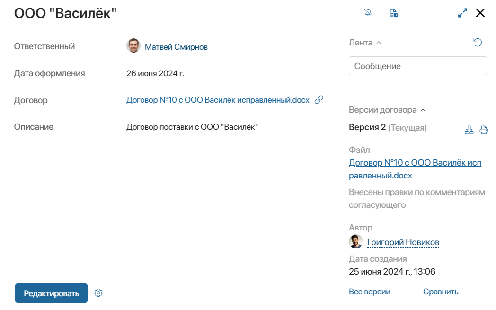
Ф.И.О.
Данное поле позволяет вносить данные о фамилии, имени и отчестве.
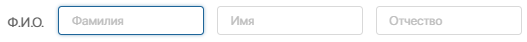
Произвольное приложение
Поле позволяет выбрать элемент любого приложения.
Вы можете определить количество элементов приложения, указываемое на форме: Один или Несколько.
Если выбрана опция Несколько, в поле можно будет указывать элементы разных приложений.
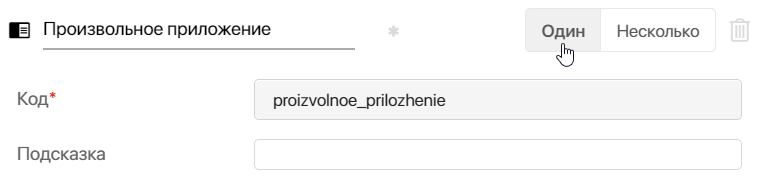
Чтобы выбрать элемент, на форме приложения нажмите на поле или на значок лупы. В окне поиска выберите приложение из списка.
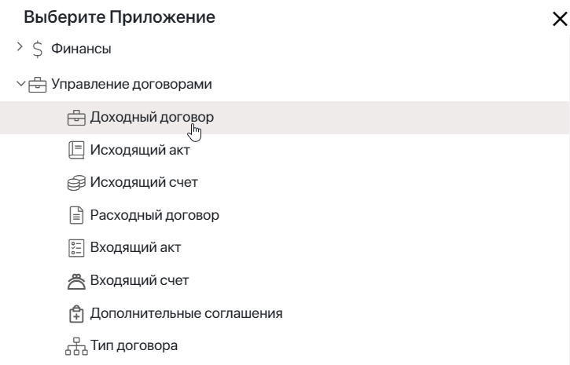
Откроется окно, в котором можно выбрать элемент приложения. В дальнейшем он отобразится на форме в виде ссылки. Нажмите на неё для перехода на страницу элемента.
Чтобы выбрать другой элемент, нажмите значок корзины справа от ссылки. Поле выбора элемента будет очищено.
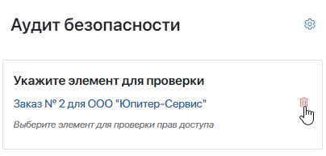
Если значок корзины не отображается, значит, поле доступно только для чтения. Изменить его значение нельзя.
Поле Произвольное приложение можно добавить, например, на виджет. А затем использовать его на разных формах как универсальный компонент.
Обратите внимание, при сопоставлении входных и выходных атрибутов, а также связывании с полем типа Произвольное приложение вы можете указать переменные одного из следующих типов: Произвольное приложение, Приложение, Файл, Изображение, Пользователь.
Узнать больше о входных и выходных атрибутах и связывании полей.
Ссылка
Позволяет отображать ссылку на сайт, документ в ELMA365, раздел и другие интернет-источники.
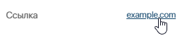
Таблица
С помощью поля Таблица вы можете структурировать данные по строкам и колонкам, изменять их внешний вид и вставлять специальные формулы, которые будут выполнять расчёты. Подробнее о том, как работать с этим типом поля, вы можете прочитать в статье «Тип данных „Таблица“».
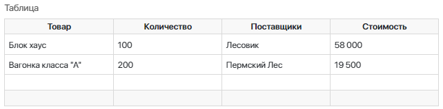
Роль
С помощью поля типа Роль вы можете указать пользователей системы, группы пользователей, а также элементы оргструктуры.
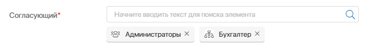
Использовать тип Роль удобно, когда нужно выбрать целую группу пользователей или определённые элементы оргструктуры. В этом случае необязательно выделять каждого конкретного пользователя, достаточно указать должность или группу.
Вы можете разрешить сотрудникам указывать в поле заблокированных пользователей и тех, кто получил приглашение в компанию, но ещё не входил в систему.
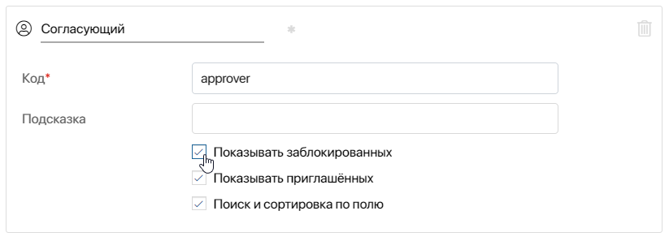
Пользователи
В поле этого типа вы можете указать пользователей системы.
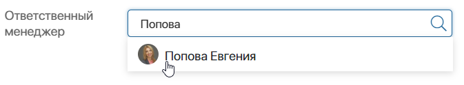
После добавления поля на форму задайте настройки:
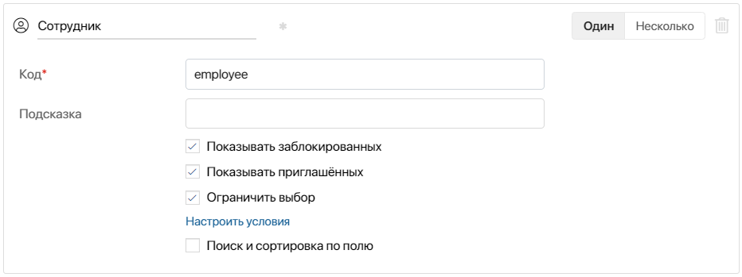
- введите название и код поля;
- выберите, сколько пользователей можно указать в поле: Один или Несколько.
Для свойства типа Пользователи (Один) в дизайнере интерфейсов на шаблон виджета или форму приложения можно выносить вложенные поля, например, Ф.И.О, Должность и т. д.
В свойстве типа Пользователи (Несколько) можно настроить поиск по параметрам и выбирать пользователей из списка, нажав значок лупы;
- отметьте опции:
- Показывать заблокированных и Показывать приглашённых — сотрудники смогут указывать в поле заблокированных пользователей и тех, кто получил приглашение в компанию, но ещё не входил в систему;
- Ограничить выбор — настройте условия для фильтрации записей при выборе пользователей в поле. Например, чтобы показывать только сотрудников определённой должности. Подробнее о настройке читайте в статье «Ограничить выбор пользователей и элементов приложения на форме элемента».
Приложение
Разместив поле на форме приложения, вы можете выбрать в нём один или несколько элементов другого приложения. Тогда в карточке элемента первого приложения добавится ссылка на связанный элемент второго. Нажав на неё, можно открыть карточку связанного элемента.
Приложение выбирается на этапе настройки формы или создания контекстной переменной. Чтобы определить, сколько элементов приложения можно будет указывать в поле, в настройках переменной выберите подтип Один или Несколько.
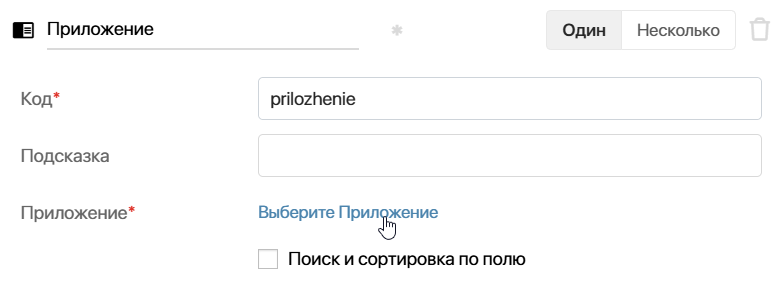
начало внимание
Если поле вынесено на форму приложения, в которое уже добавлены элементы, изменить подтип с Несколько на Один нельзя.
конец внимание
начало примечание
Примечание
При настройке отображения элементов на странице приложения поле с подтипом Несколько можно добавить в таблицу, на плитки или на канбан‑доску. В этом случае при открытии приложения загружаются данные по всем ссылкам из этого поля с карточки каждого отображаемого элемента. Это повышает нагрузку на систему, особенно если таких ссылок много. Чтобы оптимизировать отображение страниц приложений, можно включить жадную загрузку данных.
конец примечание
После выбора приложения появляются дополнительные опции:
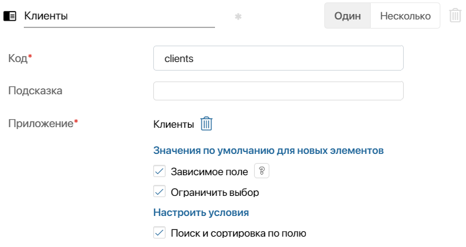
- Значения по умолчанию для новых элементов — включите опцию и настройте приложение таким образом, чтобы на его форме пользователи могли создавать элементы другого приложения с автоматически заполненными значениями. Например, на форме договора можно создавать относящиеся к нему акты и заполнять их поля в соответствии с данными договора. Подробнее читайте в статье «Значения по умолчанию для новых элементов»;
- Зависимое поле — отметьте опцию, чтобы при создании элемента приложения добавлять элементы дочернего приложения и сохранять их только после сохранения основного элемента. Подробнее о настройке можно прочитать в статье «Зависимое поле для создания элементов дочернего приложения»;
- Ограничить выбор — активируйте опцию и настройте условия для фильтрации записей при выборе элементов связанного приложения. Например, показывать только элементы, созданные позднее заданной даты, или элементы, которые были добавлены текущим пользователем. Подробнее о настройке читайте в статье «Ограничить выбор пользователей и элементов приложения на форме элемента».
В дизайнере интерфейсов вы можете выносить вложенные поля свойства типа Приложение с подтипом Один на шаблон виджета или форму приложения.
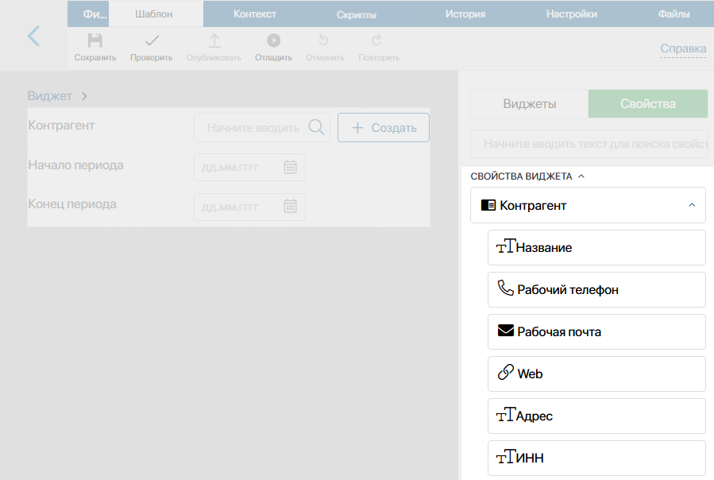
Чтобы заполнить поле на настроенной форме, начните вводить название элемента или нажмите значок лупы для перехода к списку доступных элементов и поиску по параметрам.
Если пользователю предоставлены права доступа на создание элементов в выбранном приложении, он также может добавить новый элемент при заполнении поля на форме. Для этого необходимо нажать кнопку + Создать.
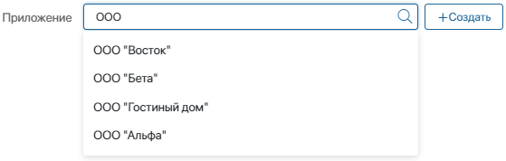
В расширенном режиме настройки форм для полей типа Приложение автоматически включается опция Только для чтения. При заполнении поля на форме пользователи увидят только кнопку создания нового элемента. Вы можете настроить, как она будет выглядеть. Подробнее об этом читайте в статье «Создание элементов приложения на карточке другого приложения».
Чтобы пользователи при заполнении поля могли выбирать элемент из списка существующих, перейдите в настройки формы приложения и отключите опцию Только для чтения для этого свойства. Подробнее читайте в статье «Вкладки „Создание“, „Просмотр“, „Редактирование“».
Событие
Используется в контексте пользовательского виджета, чтобы передать событие из дочернего виджета в родительский. Событиями могут быть нажатие кнопки, ввод данных в поле и т. д. При размещении виджета на форме или странице пользовательское событие отображается в настройках виджета на вкладке События. Вы можете работать с ним так же, как и с системными событиями, доступными по умолчанию.
Таким образом можно настроить выполнение скрипта в родительском виджете, когда произойдёт действие в дочернем. Например, если в дочернем виджете изменилось значение поля или пользователь нажал кнопку, то в родительском — выполнится расчёт по формуле, фильтрация данных и т. д.
Для этого в дочернем виджете нужно добавить переменную типа Событие, а в родительском — привязать к ней скрипт. Тогда происходит следующее:
- в дочернем виджете — фиксируется событие, например, пользователь нажимает кнопку;
- в родительском виджете — скрипт запускает действие, например, выполняется фильтрация данных после нажатия кнопки.
Подробнее о свойстве типа Событие и работе с ним читайте в справке ELMA365 TS SDK. Примеры использования этого типа данных приведены в статьях: «Передать событие из дочернего виджета в родительский», «Передать событие между двумя дочерними виджетами».
Произвольный тип
Передаёт или хранит произвольные данные в контексте виджета. Подробнее читайте в справке ELMA365 TS SDK. Переменную такого типа можно использовать в скрипте в качестве служебной. Например, примените её, чтобы записать результаты клиентского скрипта для создания динамической формы. Подробнее про этот пример смотрите в статье «Биндинг и другие аспекты действий в бизнес-процессах».
Отчет
Отчёт — это компонент системы, в котором в виде таблицы показываются данные из нескольких приложений-источников. Например, в отчёте Реестр заказов можно связать между собой разные приложения системы и отобразить информацию о заказе, клиенте, договоре и счёте. Подробнее читайте в разделе «Отчет».
Поле типа Отчет позволяет добавить на форму приложения или страницу ссылку на созданный в системе отчёт. При переходе по ссылке будет открываться страница с настроенной таблицей отчёта.
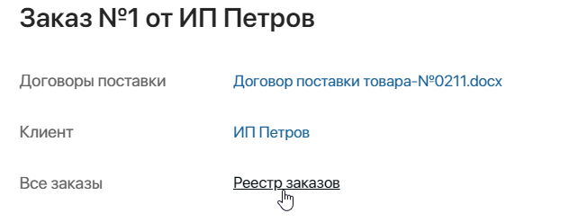
Создание поля типа Отчет доступно только в дизайнере интерфейсов на вкладке Контекст.
Чтобы добавить поле типа Отчет:
- В приложении включите расширенный режим настройки форм.
- Перейдите в дизайнер интерфейсов выбранной формы приложения или страницы и на вкладке Контекст нажмите + Добавить.
- Укажите имя и тип свойства, выберите созданный в системе отчёт и нажмите Создать.
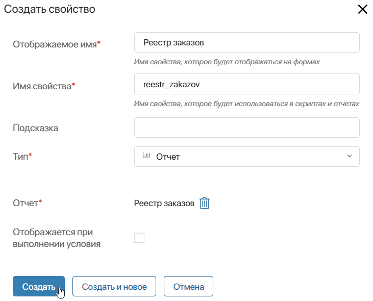
Теперь вы сможете обращаться к полям выбранного отчёта в скриптах с помощью методов TS SDK или добавить ссылку на отчёт на форму или страницу.
- Перейдите на вкладку Шаблон, на правой панели выберите Свойства и перетащите свойство типа Отчет на поле для моделирования.
- В открывшемся окне задайте название поля на форме и нажмите Сохранить.
- Чтобы отредактировать название ссылки на отчёт, измените имя поля на вкладке Контекст.
- Сохраните и опубликуйте настроенную форму или страницу.
Для поля типа Отчет включается опция Только для чтения. Пользователи смогут переходить на страницу отчёта по заданной ссылке, но не смогут изменять значение поля.